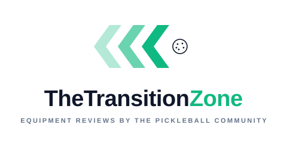

The trusted source for
pickleball paddle reviews
By you, the pickleball community.
Real reviews from real owners. Durability tracking. No brand bias.
Launching soon
Why TheTransitionZone
Reddit threads disappear. Creator reviews can be biased, and often don't have a follow up to inform us of a paddle's longevity. Retailer reviews are unverified. We are building the missing piece: a neutral, structured hub where every pickleball paddle review comes from a real player who actually owns the paddle. Built by the community, for the community.
- Ownership-gated reviews. Add it to your bag before you rate it.
- Owners and tried-it, kept separate. Casual hits never blend into the main score.
- Trust scoring. Helpful reviewers rise. Low-quality ones get filtered.
- Longevity tracking. See how pickleball paddles actually hold up over months of play.
Get notified when we launch
Drop your email and we will let you know the moment the site is live.
One email when we launch. No newsletter, no spam.
Common questions
- What is TheTransitionZone?
- TheTransitionZone is a community-driven hub for honest pickleball paddle reviews. Every review comes from a real player who owns the paddle, so you get unbiased, structured feedback in one place.
- How are pickleball paddle reviews verified?
- Before you can rate a paddle, you must add it to your bag. That ownership gate means reviews come from people who actually play with the paddle, not from one-off testers or sponsored creators.
- How are owner reviews different from tried-it reviews?
- Owner reviews come from players who use a paddle as their main stick. Tried-it reviews capture quick impressions from short demo sessions. We aggregate them separately so casual hits never blend into a paddle's main score.
- What is paddle longevity tracking?
- Most pickleball paddles wear out faster than reviewers admit. We let owners log how long their paddle lasted and why they retired it, then aggregate that data into a real-world durability picture for every paddle in the catalogue.
- When does TheTransitionZone launch?
- We are in active development now. Drop your email above and we will let you know the moment the site is live.